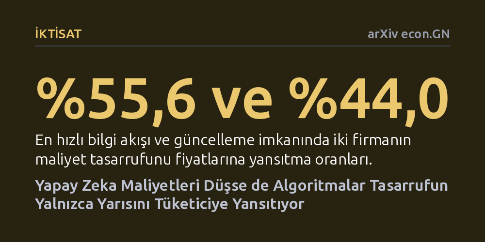

IKTISAT · arXiv econ.GN · 2026-10-27
Yapay zeka işletim maliyetlerindeki düşüşün fiyatlara nasıl yansıdığını inceleyen benzetim çalışmasında, algoritmik fiyatlandırmanın dinamikleri araştırıldı. Sonuçlar, en elverişli koşullarda dahi algoritmaların maliyet indiriminin yalnızca yüzde 44 ila 55,6'sını fiyatlara yansıttığını ve tüketici refahını beklentilerin altında bıraktığını gösterdi.
Yapay zeka teknolojisinin ucuzlamasının son kullanıcı fiyatlarını doğrudan ve aynı oranda düşüreceği yönündeki yaygın piyasa beklentisinin otomatik fiyatlama algoritmaları karşısında geçerli olmayabileceğini gösteriyor.

Yapay zeka modellerini eğitmek ve çalıştırmak her geçen gün daha ucuz ve verimli hale geliyor. Donanım alanındaki gelişmeler ve algoritmik optimizasyonlar sayesinde modellerin işletim maliyetleri hızla gerilerken, genel kabul gören iktisadi beklenti bu tasarrufların doğrudan son kullanıcıya yansıyacağı ve hizmet fiyatlarını aşağı çekeceği yönündedir. Ancak dijital platformlarda fiyatlama kararları artık geleneksel yöneticiler yerine kârı en üst düzeye çıkarmak üzere eğitilen algoritmalar tarafından anlık olarak belirlenmektedir.
Bu durum yanıtlanması gereken temel bir soruyu gündeme getirmektedir: Maliyetler tabana yayılacak kadar düştüğünde, otomatik algoritmalar gerçekten rekabet ederek fiyat kırar mı, yoksa örtük bir denge kurarak indirimi kendi kâr marjlarına mı eklerler? Özellikle rakiplerin fiyat bilgilerine erişimdeki gecikmeler ve fiyat güncelleme sıklığı gibi piyasa dinamiklerinin, tüketicinin bu ucuzlamadan ne ölçüde pay alacağını nasıl şekillendirdiği kritik bir merak konusudur.
Araştırmacı bu soruya yanıt bulabilmek amacıyla gerçek piyasa gürültüsünden yalıtılmış, iki farklılaşmış satıcıdan oluşan benzetimli bir iktisadi pazar kurguladı. Tüketici talebinin logit modeliyle belirlendiği bu sistemde satıcılar, geçmiş deneyimlerinden ödül-ceza mekanizmasıyla öğrenen 'tablolu Q-öğrenme' (tabular Q-learning) algoritmalarıyla temsil edildi. Deney kapsamında firmaların rakip fiyat bilgilerini kaç dönem gecikmeyle gördüğü, fiyatlarını ne sıklıkla güncelleyebildiği, üretim maliyetlerinin düşüp düşmediği ve firmalar arası kalite-maliyet farkları faktöriyel bir tasarımla sistematik olarak değiştirildi.
Çalışmada 16 farklı pazar koşulunun her biri için 60 bağımsız pazar tohumu kullanılarak toplam 960 tam ölçekli öğrenme oturumu yürütüldü. Algoritmaların öğrenme süreci tamamlandıktan sonra ortaya çıkan nihai fiyatlandırma stratejileri değerlendirildi; beklenen tüketici refahı ve maliyet düşüşlerinin fiyatlara yansıma oranları eşleştirilmiş tohum özyükleme (bootstrap) yöntemleriyle analiz edildi.
Elde edilen sonuçlar, algoritmaların maliyet tasarrufunu alıcılara bütünüyle aktarmadığını net bir şekilde ortaya koydu. Bilgi gecikmesinin en kısa olduğu ve algoritmaların her dönem fiyat revize edebildiği en rekabetçi koşullarda bile, iki firmanın ortalama fiyat indirimleri uygulanan maliyet indiriminin yalnızca yüzde 55,6'sı ile yüzde 44,0'ı düzeyinde kaldı. Yani girdi maliyetlerindeki ucuzlamanın yaklaşık yarısı algoritmalar tarafından tutuldu ve tüketici fiyatlarına yansıtılmadı.
Ayrıca bilgi gecikmesi ile fiyat güncelleme sıklığı arasındaki etkileşimin tüketici refahı üzerindeki etkisi -0,00025 standart birim olarak hesaplandı ve yüzde 95 güven aralığının sıfırı içerdiği görüldü. Bu durum, piyasa bilgi akışındaki gecikmelerin tüketici kaybının ana sebebi olmadığını gösterdi. En dikkat çekici bulgu ise, incelenen 16 deneysel koşulun tamamında algoritmaların belirlediği ortalama tüketici refahının, standart iktisat teorisindeki statik Nash dengesi referans noktasının altında kalması oldu.
Bu bulgular, yapay zeka işletim maliyetlerindeki düşüşün fiyatları kaçınılmaz olarak aynı oranda düşüreceği yönündeki iyimser varsayımın simülasyon ortamında dahi geçerli olmadığını kanıtlamaktadır. Kendi haline bırakılan ve kâr odaklı öğrenen algoritmalar, açık bir gizli anlaşma (kartel) oluşturmasalar bile tasarrufun önemli bir kısmını tüketiciye hissettirmemektedir. Nitekim yazar, bulguların 'simüle edilen maliyet tasarruflarının alıcılara bütünüyle yansıtılması gerekmediğini' gösterdiğini ancak bunun yasa dışı bir danışıklı dövüş anlamına gelmediğini açıkça belirtmektedir.
Çalışma, dijitalleşen pazarlarda rekabet hukuku ve tüketici koruma politikaları açısından önemli ipuçları taşımaktadır. Yapay zeka altyapısı ucuzlasa bile algoritma güdümlü serbest piyasaların tüketicilere beklenen refahı kendiliğinden sunamayabileceği gerçeği, ileride gerçek piyasa verileriyle derinleştirilecek yeni regülasyon tartışmalarının kapısını aralamaktadır.